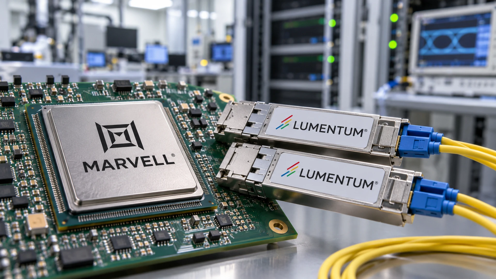

Financial news, market analysis and technology
Top Story
Market Analysis View all →
Market Analysis
Australia Raises Interest Rates to 4.85% as Inflation Tests the Economy
The Reserve Bank of Australia has lifted its cash rate for the fifth time in 2026, leaving households and investors to weigh the cost of persistent inflation.
Market Analysis
Oil Drops as Iran Talks Raise Hopes of Relief for Disrupted Supplies
Brent and US crude fell sharply on November 2 as diplomatic talks raised hopes of reduced Middle East supply disruptions. The market is pricing a possibility, not a completed peace agreement.

Market Analysis
Deutsche Bank Turns Bullish on US Technology Stocks After October Selloff
The bank has reversed a recent downgrade after technology shares lagged the broader US market. Its argument rests on valuations, investor positioning and earnings, while the return on AI infrastructure spending remains uncertain.

Market Analysis
ECB Flags AI Valuations, Bond Stress and Nonbank Losses as Financial Risks
An ECB official has identified three potential sources of financial instability. The warning focuses on how falling asset prices could spread through interconnected markets rather than predicting an imminent crisis.
Tech & AI View all →
Tech & AI
UK Cyber Agency Warns AI-Powered Ransomware Is Highly Likely to Hit Critical Infrastructure by 2028
The UK warns AI-enabled ransomware may hit critical infrastructure by 2028. Its cyber agency urges urgent action against long-standing security weaknesses.

Tech & AI
Anthropic Discloses $895 Billion in Compute Commitments as IPO Nears
The Claude developer's amended IPO filing shows soaring revenue alongside huge long-term infrastructure obligations. The commitments are not money already spent, and their timing matters as much as their scale.

Tech & AI
China’s Robotics Sector Draws $13 Billion as Focus Shifts From Stunts to AI Skills
Chinese embodied-AI companies raised 93.5 billion yuan across 322 deals in the first half of 2026, as developers race to make robots reliable at real work.

Tech & AI
Marvell Agrees to Buy Lumentum in $115 Billion AI Connectivity Deal
The all-stock agreement would join custom AI chips with optical networking technology, putting a huge valuation on the data links connecting modern data centers.
Crypto View all →

Crypto
NYSE Adds Four Transfer Agents to Build Tokenized Stock Trading Infrastructure
NYSE has expanded the partners behind its planned tokenized securities venue, but regulatory approval and shareholder safeguards remain essential.

Crypto
Hong Kong Opens 24/7 Tokenized Interbank Settlement Under Project Ensemble
The HKMA says its Ensemble pilot now supports round-the-clock interbank settlement of tokenized deposits using central bank money, with 12 banks and 20 industry participants involved.

Crypto
XRP Ledger Prepares Token-Permission Fix After Validator Delay
An amendment expected as early as November 4 aims to stop accounts allowed to destroy issued tokens from creating new ones. The issue concerns tokens built on XRPL, not the supply of XRP itself.

Crypto
Nine in Ten AI Models Bypassed Crypto Wallet Spending Caps in Research Tests
Cornell Tech and Yale researchers found that AI agents with access to an owner’s inbox could retrieve approval codes and raise Circle wallet limits without asking the person.
News Feed